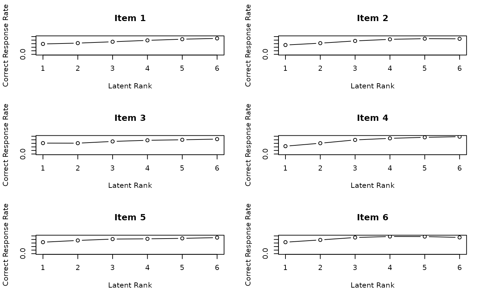
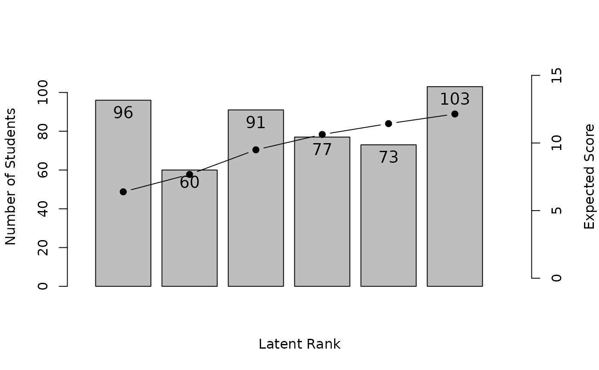
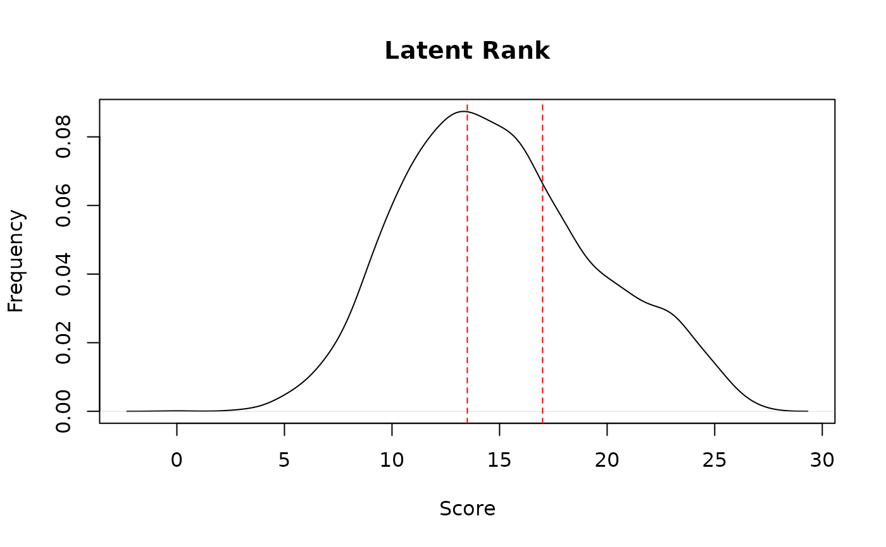
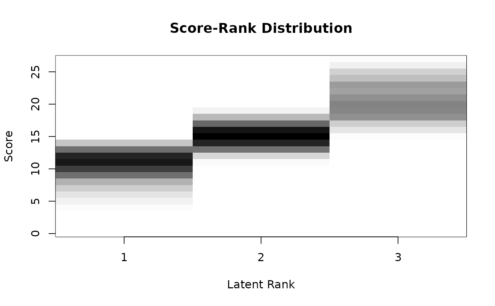
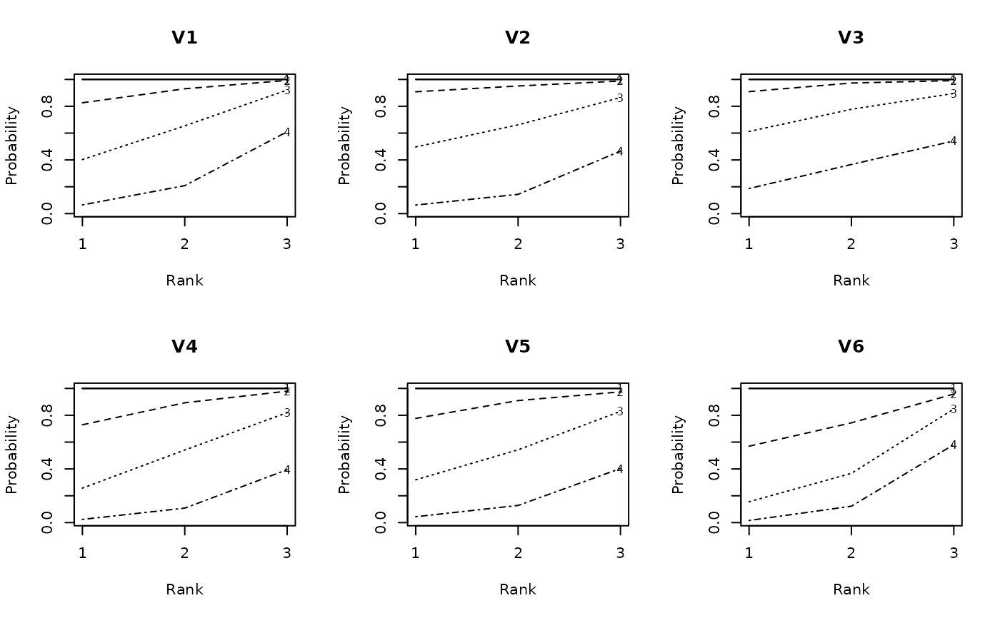
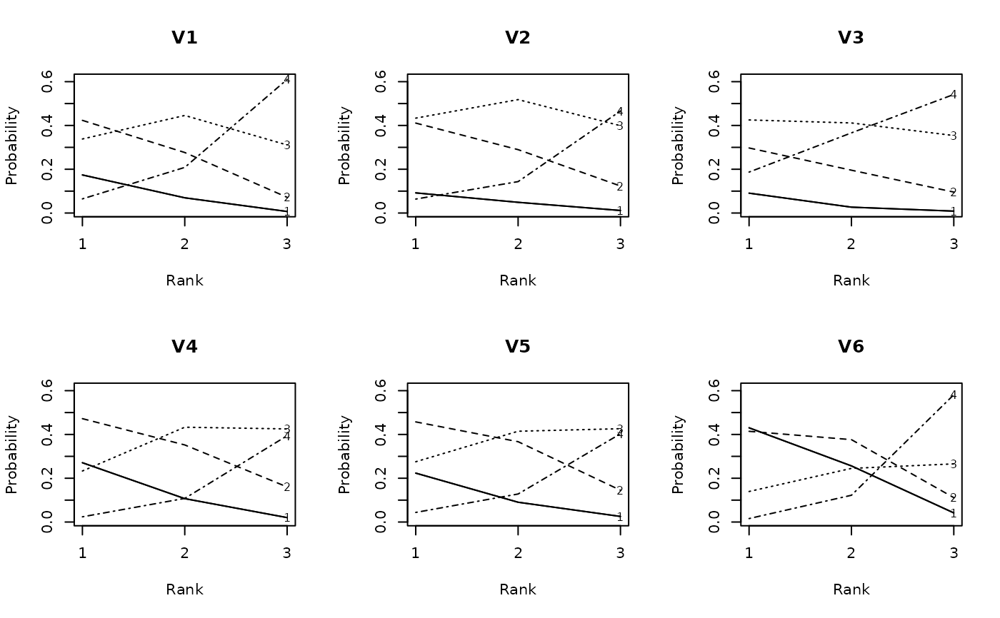
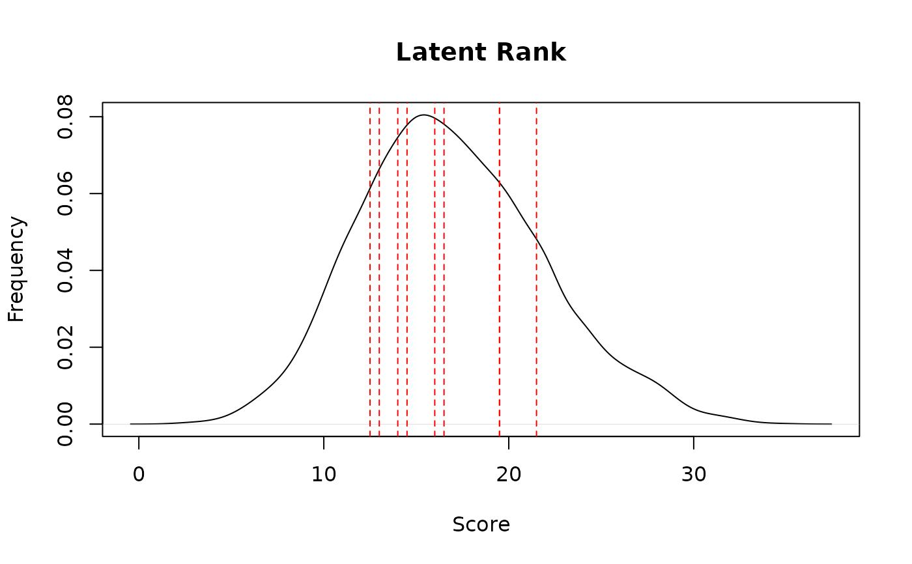
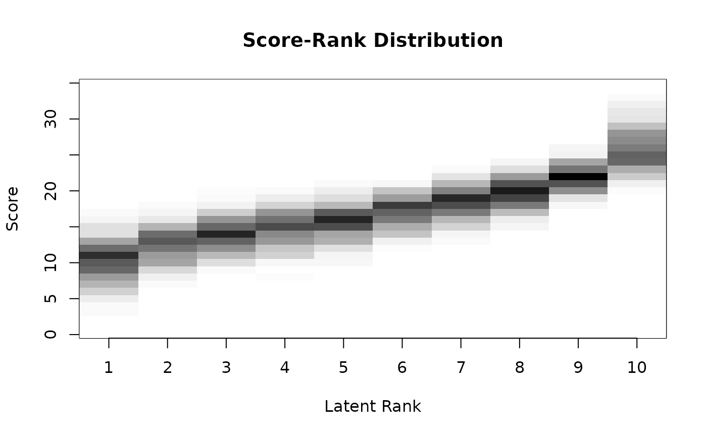
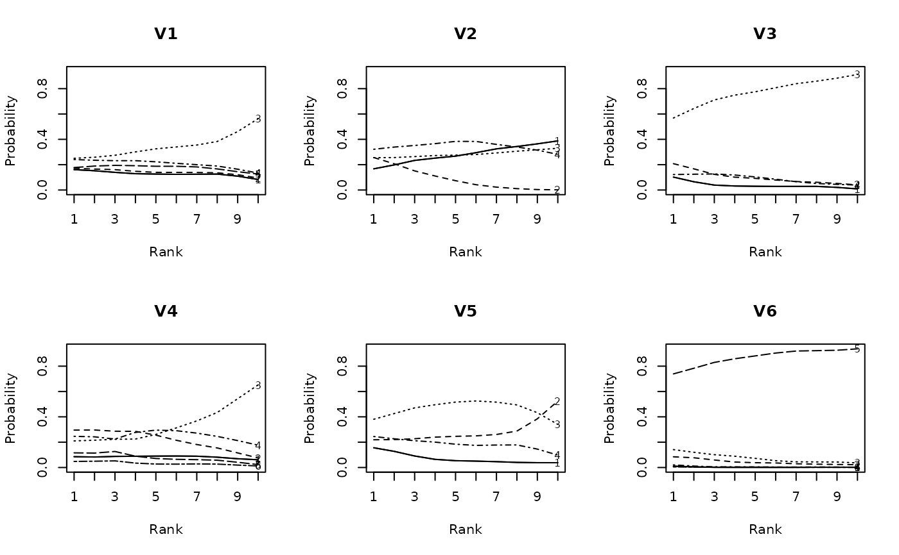

A general function for estimating Latent Rank Analysis across different response types. This function automatically dispatches to the appropriate method based on the response type:
For binary data (
LRA.binary): Analysis using either SOM or GTM methodFor ordinal data (
LRA.ordinal): Analysis using the GTM method with category thresholdsFor rated data (
LRA.rated): Analysis using the GTM method with rating categories
Latent Rank Analysis identifies underlying rank structures in test data and assigns examinees to these ranks based on their response patterns.
Usage
LRA(U, ...)
# Default S3 method
LRA(U, na = NULL, Z = NULL, w = NULL, ...)
# S3 method for class 'binary'
LRA(
U,
nrank = 2,
method = "GTM",
mic = FALSE,
maxiter = 100,
BIC.check = FALSE,
seed = NULL,
verbose = FALSE,
beta1 = 1,
beta2 = 1,
...
)
# S3 method for class 'ordinal'
LRA(
U,
nrank = 2,
mic = FALSE,
maxiter = 100,
trapezoidal = 0,
eps = 1e-04,
verbose = FALSE,
...
)
# S3 method for class 'rated'
LRA(
U,
nrank = 2,
mic = FALSE,
maxiter = 100,
trapezoidal = 0,
eps = 1e-04,
minFreqRatio = 0,
verbose = FALSE,
...
)Arguments
- U
Either an object of class "exametrika" or raw data. When raw data is given, it is converted to the exametrika class with the
dataFormatfunction.- ...
Additional arguments passed to specific methods.
- na
Values to be treated as missing values.
- Z
Missing indicator matrix of type matrix or data.frame. 1 indicates observed values, 0 indicates missing values.
- w
Item weight vector.
- nrank
Number of latent ranks to estimate. Must be between 2 and 20.
- method
For binary data only. Either "SOM" (Self-Organizing Maps) or "GTM" (Gaussian Topographic Mapping). Default is "GTM".
- mic
Logical; if TRUE, forces Item Reference Profiles to be monotonically increasing. Default is FALSE.
- maxiter
Maximum number of iterations for estimation. Default is 100.
- BIC.check
For binary data with SOM method only. If TRUE, convergence is checked using BIC values. Default is FALSE.
- seed
For binary data with SOM method only. Random seed for reproducibility.
- verbose
Logical; if TRUE, displays detailed progress during estimation. Default is TRUE.
- beta1
Beta distribution parameter 1 for prior density of rank reference matrix (GTM method only). Default is 1.
- beta2
Beta distribution parameter 2 for prior density of rank reference matrix (GTM method only). Default is 1.
- trapezoidal
Specifies the height of both tails when using a trapezoidal prior distribution. Must be less than 1/nrank. The default value is 0, which results in a uniform prior distribution.
- eps
Convergence threshold for parameter updates. Default is 1e-4.
- minFreqRatio
Minimum frequency ratio for response categories (default = 0). Categories with occurrence rates below this threshold will be excluded from analysis. For example, if set to 0.1, response categories that appear in less than 10% of responses for an item will be omitted.
Value
A list of class "exametrika" and the specific subclass (e.g., "LRA", "LRAordinal", "LRArated") containing the following common elements:
- msg
A character string indicating the model type.
- testlength
Length of the test (number of items).
- nobs
Sample size (number of rows in the dataset).
- Nrank
Number of latent ranks specified.
- N_Cycle
Number of EM algorithm iterations performed.
- converge
Logical value indicating whether the algorithm converged within maxiter iterations
- TRP
Test Reference Profile vector showing expected scores at each rank.
- LRD
Latent Rank Distribution vector showing the number of examinees at each rank.
- RMD
Rank Membership Distribution vector showing the sum of probabilities for each rank.
- Students
Rank Membership Profile matrix showing the posterior probabilities of examinees belonging to each rank, along with their estimated ranks and odds ratios.
- ItemFitIndices
Fit indices for each item. See also
ItemFit.- TestFitIndices
Overall fit indices for the test. See also
TestFit.
Each subclass returns additional specific elements, detailed in their respective documentation.
For binary data (LRA.binary), the returned list additionally includes:
- IRP
Item Reference Profile matrix showing the probability of correct response for each item across different ranks.
- IRPIndex
Item Response Profile indices including the location parameters B and Beta, slope parameters A and Alpha, and monotonicity indices C and Gamma.
For ordinal data (LRA.ordinal), the returned list additionally includes:
- msg
A character string indicating the model type.
- converge
Logical value indicating whether the algorithm converged within maxiter iterations
- ScoreReport
Descriptive statistics of test performance, including sample size, test length, central tendency, variability, distribution characteristics, and reliability.
- ItemReport
Basic statistics for each item including category proportions and item-total correlations.
- ICBR
Item Category Boundary Reference matrix showing cumulative probabilities for rank-category combinations.
- ICRP
Item Category Reference Profile matrix showing probability of response in each category by rank.
- ScoreRankCorr
Spearman's correlation between test scores and estimated ranks.
- RankQuantCorr
Spearman's correlation between estimated ranks and quantile groups.
- ScoreRank
Contingency table of raw scores by estimated ranks.
- ScoreMembership
Expected rank memberships for each raw score.
- RankQuantile
Cross-tabulation of rank frequencies and quantile groups.
- MembQuantile
Cross-tabulation of rank membership probabilities and quantile groups.
- CatQuant
Response patterns across item categories and quantile groups.
For rated data (LRA.rated), the returned list additionally includes:
- msg
A character string indicating the model type.
- converge
Logical value indicating whether the algorithm converged within maxiter iterations
- ScoreReport
Descriptive statistics of test performance, including sample size, test length, central tendency, variability, distribution characteristics, and reliability.
- ItemReport
Basic statistics for each item including category proportions and item-total correlations.
- ICRP
Item Category Reference Profile matrix showing probability of response in each category by rank.
- ScoreRankCorr
Spearman's correlation between test scores and estimated ranks.
- RankQuantCorr
Spearman's correlation between estimated ranks and quantile groups.
- ScoreRank
Contingency table of raw scores by estimated ranks.
- ScoreMembership
Expected rank memberships for each raw score.
- RankQuantile
Cross-tabulation of rank frequencies and quantile groups.
- MembQuantile
Cross-tabulation of rank membership probabilities and quantile groups.
- ItemQuantileRef
Reference values for each item across quantile groups.
- CatQuant
Response patterns across item categories and quantile groups.
Binary Data Method
LRA.binary analyzes dichotomous (0/1) response data using either Self-Organizing Maps (SOM)
or Gaussian Topographic Mapping (GTM).
Ordinal Data Method
LRA.ordinal analyzes ordered categorical data with multiple thresholds,
such as Likert-scale responses or graded items.
Rated Data Method
LRA.rated analyzes data with ratings assigned to each response, such as
partially-credited items or preference scales where response categories have different weights.
See also
plot.exametrika for visualizing LRA results.
Examples
# \donttest{
# Binary data example
# Fit a Latent Rank Analysis model with 6 ranks to binary data
result.LRA <- LRA(J15S500, nrank = 6)
# Display the first few rows of student rank membership profiles
head(result.LRA$Students)
#> Membership 1 Membership 2 Membership 3 Membership 4 Membership 5
#> Student001 0.2704649921 0.357479353 0.27632327 0.084988078 0.010069050
#> Student002 0.0276546965 0.157616072 0.47438958 0.279914853 0.053715813
#> Student003 0.0228189795 0.138860955 0.37884545 0.284817610 0.120794858
#> Student004 0.0020140858 0.015608542 0.09629429 0.216973334 0.362406292
#> Student005 0.5582996437 0.397431414 0.03841668 0.003365601 0.001443909
#> Student006 0.0003866603 0.003168853 0.04801344 0.248329964 0.428747502
#> Membership 6 Estimate Rank-Up Odds Rank-Down Odds
#> Student001 0.0006752546 2 0.7729769 0.7565891
#> Student002 0.0067089816 3 0.5900527 0.3322503
#> Student003 0.0538621490 3 0.7518042 0.3665372
#> Student004 0.3067034562 5 0.8462973 0.5987019
#> Student005 0.0010427491 1 0.7118604 NA
#> Student006 0.2713535842 5 0.6328983 0.5791986
# Plot Item Reference Profiles (IRP) for the first 6 items
plot(result.LRA, type = "IRP", items = 1:6, nc = 2, nr = 3)

# Plot Test Reference Profile (TRP) showing expected scores at each rank
plot(result.LRA, type = "TRP")

# }
# \donttest{
# Ordinal data example
# Fit a Latent Rank Analysis model with 3 ranks to ordinal data
result.LRAord <- LRA(J15S3810, nrank = 3, mic = TRUE)
# Plot score distributions
plot(result.LRAord, type = "ScoreFreq")

plot(result.LRAord, type = "ScoreRank")

# Plot category response patterns for items 1-6
plot(result.LRAord, type = "ICBR", items = 1:6, nc = 3, nr = 2)

plot(result.LRAord, type = "ICRP", items = 1:6, nc = 3, nr = 2)

# }
# \donttest{
# Rated data example
# Fit a Latent Rank Analysis model with 10 ranks to rated data
result.LRArated <- LRA(J35S5000, nrank = 10, mic = TRUE)
# Plot score distributions
plot(result.LRArated, type = "ScoreFreq")

plot(result.LRArated, type = "ScoreRank")

# Plot category response patterns for items 1-6
plot(result.LRArated, type = "ICRP", items = 1:6, nc = 3, nr = 2)

# }